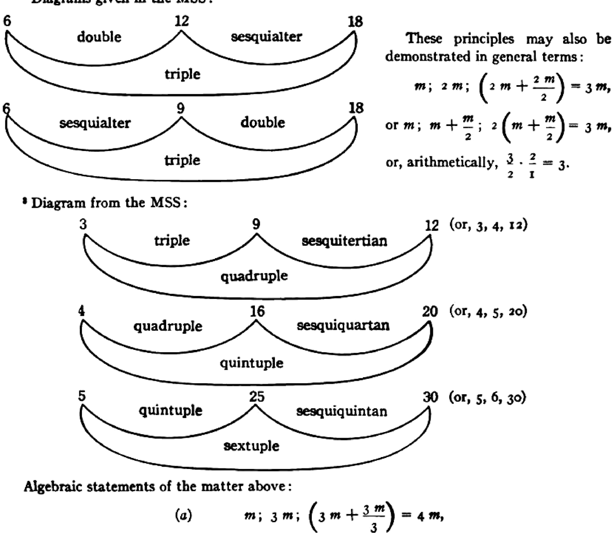

Chapter 5: Composition and Resolution of Multiples from Superparticulars¶
1. It remains for us, having made clear what other ratios the compositions of ratios yield, to move on to the succeeding parts of this introduction. Now the first two ratios of the superparticular, taken together into one, generate the first ratio of the multiple, namely the double; for every double will be a combination of a sesquialter and a sesquitertian, and every sesquialter and sesquitertian combined will always yield a single double. For example, since \(3\) is sesquialter of \(2\) and \(4\) is sesquitertian of \(3\), \(4\) will be double of \(2\), compounded of a sesquialter and a sesquitertian. Conversely, since \(6\) is double of \(3\), we shall find placed between them some number that necessarily preserves the sesquitertian ratio toward one of them and the sesquialter toward the other; thus \(4\), lying between \(6\) and \(3\), gives the sesquitertian ratio to \(3\) and the sesquialter to \(6\). Rightly, then, was it said that a double, when resolved, resolves into a sesquialter and a sesquitertian, and that when only a sesquialter and a sesquitertian are combined, a double is always formed.
f. 0251 · p. 235

2. Again, taking a fresh start, this first species of multiple thus generated, together with the first species of superparticular, yields the next species of the same genus—namely the second multiple, which is the triple; for from every double and sesquialter combined a triple necessarily arises. For since \(12\) is double of \(6\), and \(18\) is sesquialter of \(12\), immediately \(18\) is triple of \(6\). Or if I choose not to make \(12\) the middle term, but rather \(9\), the sesquialter of \(6\), the very same harmonious result will follow: since \(18\) is double of \(9\), it will preserve the triple ratio to \(6\). Thus from a sesquialter and a double blended together arises the triple, and into them it always resolves: behold, \(6\), being triple of \(2\), has \(3\) between them, exhibiting the sesquialter to \(2\) and the double of itself in \(6\).
3. And if this triple, the second species of multiple, is
f. 0252 · p. 236combined with the sesquitertian, the second species of superparticular, the next multiple—the quadruple—will arise from both, and into both it will necessarily resolve by the same nature as before. The quadruple taking the sesquiquartan produces the quintuple, that with the sesquiquintan produces the sextuple, and so forever, without any contradiction ever appearing.